设置窗口“AI”一类里新增一页“权限规则”。都是真实组件的 Lab 场景，还没接到设置窗口。模型控件已按你选的 A 改好（一行文字，思考档位用强调色），在下面第三张图的向导背后能看到输入框的样子。
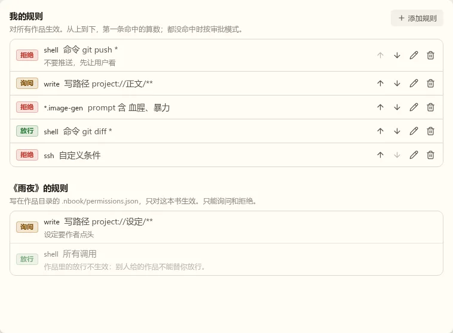
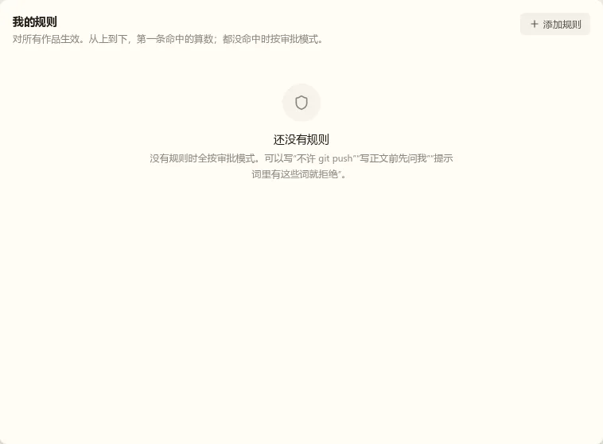
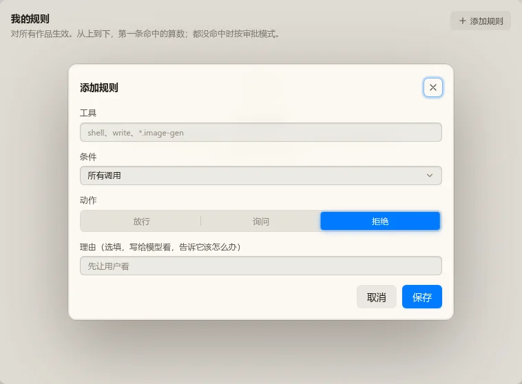
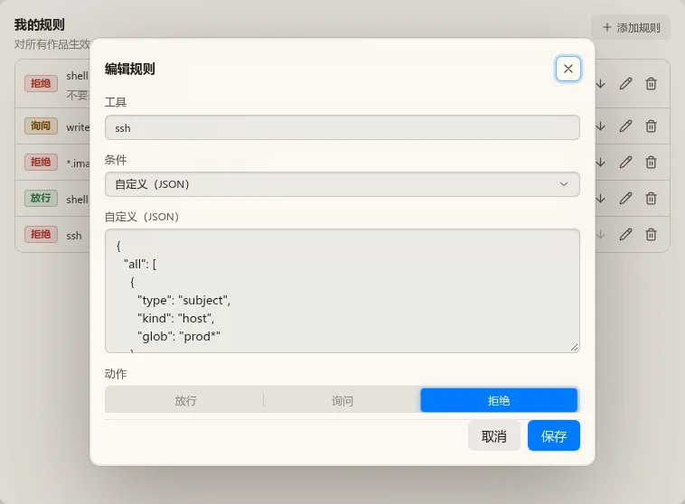
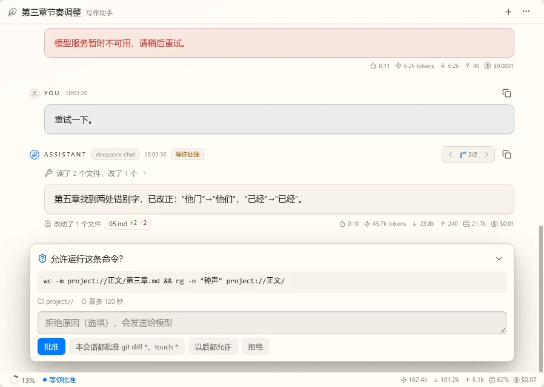
照这样接到设置窗口。
在备注里写要改什么。
都放在真实工具栏里看：每张图上面是选了角色（主力，实际用 Claude Sonnet，思考中），下面是直接选模型（Claude Sonnet，思考高）。其余部分不变。
一行灰字，名字、模型、档位连着写，只有 hover 才有底色。最安静，但三样东西连成一串，分不出主次。
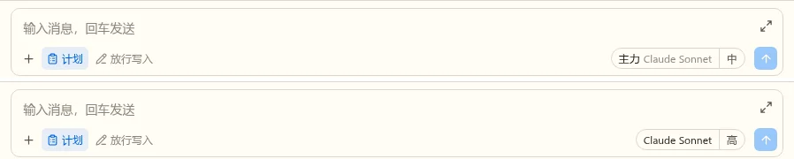
左边模型，右边档位，一条竖线隔开。结构最清楚，也最像一个控件；在这一行里比两个模式抢眼。
角色名深色、实际模型淡色，档位换成三格信号条。三样都在，没有边框和箭头，和左边的模式控件一样轻。信号条看不出确切档位，悬停写明。
上行角色或模型，下行实际模型与档位。信息最全，但这一行变成两行字，和别的控件不齐。
选了角色时只写“主力”，档位三个圆点，实际模型放到悬停和面板里。最干净，但看不到现在用的是哪个模型。
和“计划”那种高亮控件同一类，带一个小图标，写角色名与档位。一眼能看出是可点的，但右边多了一块色。
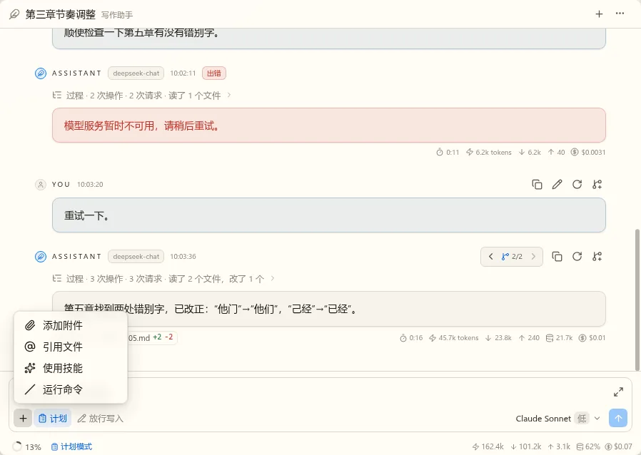
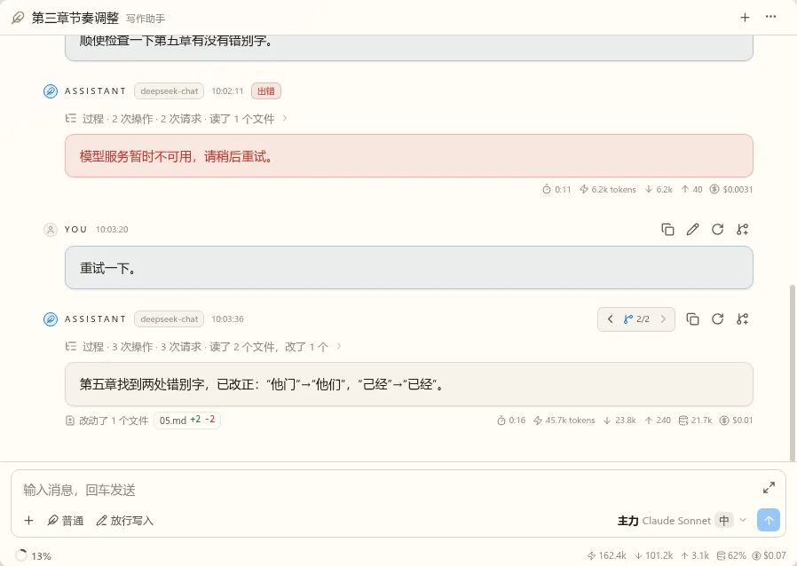
就这样。
在备注里写要改什么。
按你说的重排了，已经是真实组件：
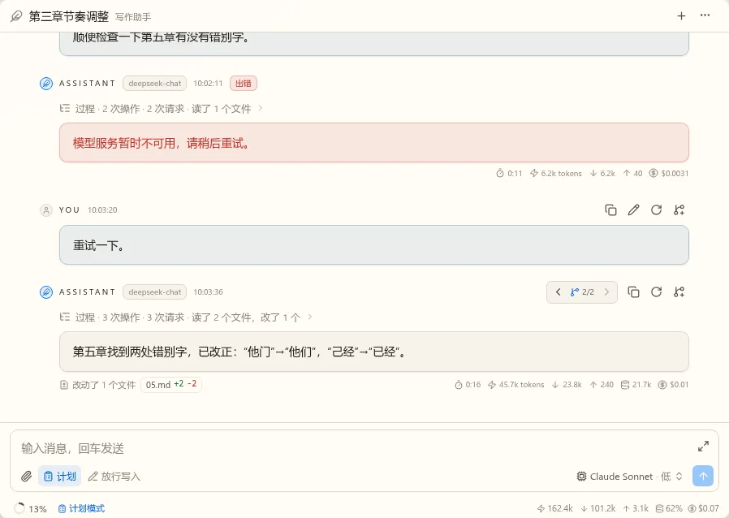
退出计划的向导（上一轮的图）这版没动，你上一轮的备注只提了这一行，我按向导没问题算。要改也写在备注里。
就这样。
在备注里写要改什么。
都是真实组件的 Lab 场景。你选的两个控件并排已经接上；下面看实际的样子。
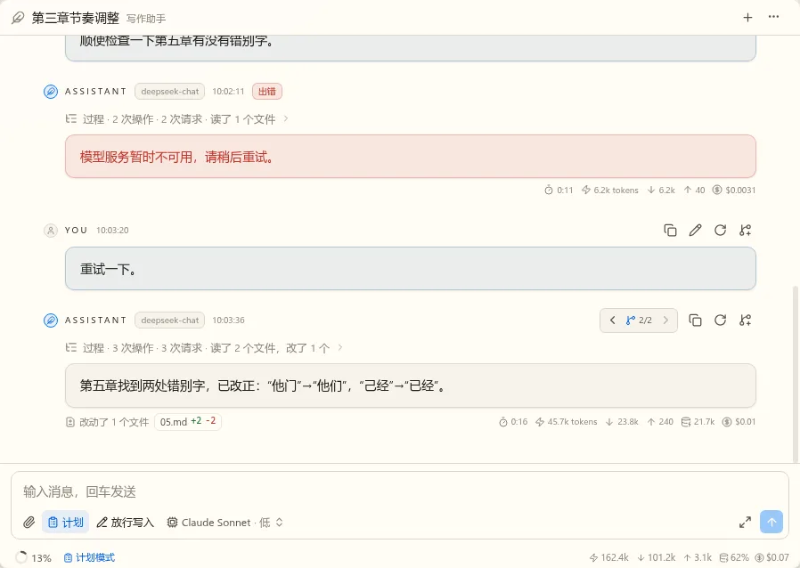
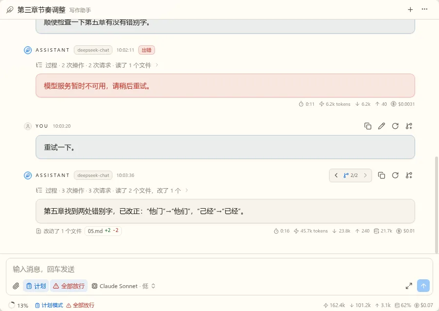
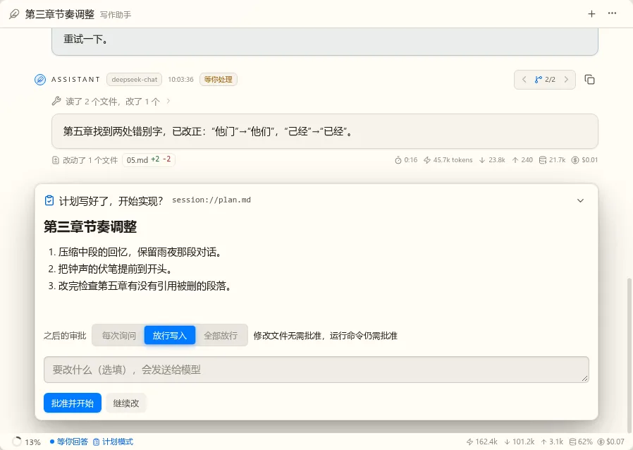
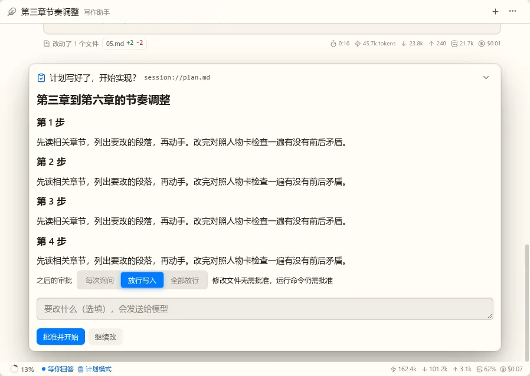
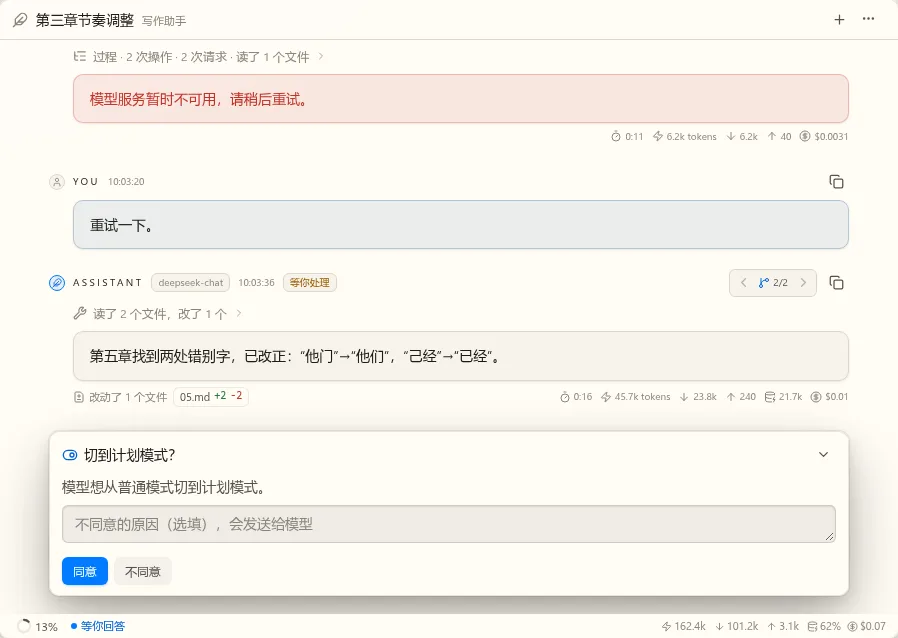
要点：向导放宽到视图高度的 85%；“之后的审批”默认保持当前；附言写了字时批准不可点，和审批向导一样。
照这样接到真实会话。
在备注里写要改什么。
现状见下面两张图。真实应用里现在只有审批模式的下拉（第一张，点开的样子）：宿主还没接 Agent 模式。Agent 模式的按钮组件已有，点一下切到下一种，只在 Lab 里能看到（第二张，“普通”）。Spec 写的是一个菜单分两组，和实现不符，DropdownMenu 也没有组标题。
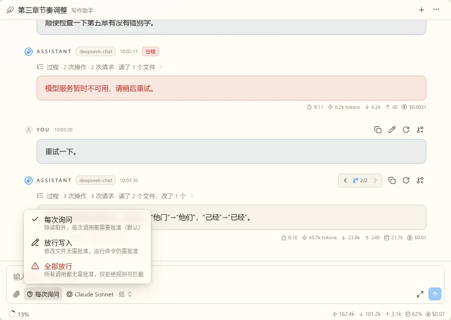
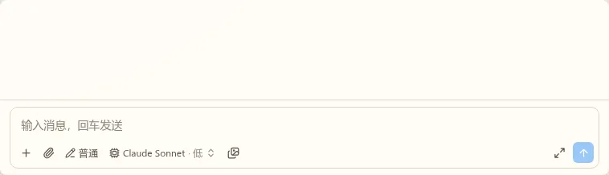
工具栏依次是 Agent 模式按钮、审批模式下拉。两个状态一直看得见，Agent 模式一键切换、Shift+Tab 同样。窄屏两个都只剩图标。
工具栏一个按钮，点开分“Agent 模式”“审批模式”两组。占地少，但按钮只能显示一个状态，另一个要点开才看到；要给 DropdownMenu 加组标题。